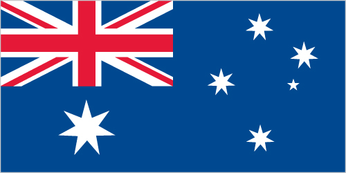

Australia - Oceania ::
Coral Sea Islands
-
Introduction :: Coral Sea Islands
-
Background:Scattered over more than three-quarters of a million square kilometers of ocean, the Coral Sea Islands were declared a territory of Australia in 1969. They are uninhabited except for a small meteorological staff on the Willis Islets. Automated weather stations, beacons, and a lighthouse occupy many other islands and reefs. The Coral Sea Islands Act 1969 was amended in 1997 to extend the boundaries of the Coral Sea Islands Territory around Elizabeth and Middleton Reefs.
-
Geography :: Coral Sea Islands
-
Location:Oceania, islands in the Coral Sea, northeast of AustraliaGeographic coordinates:18 00 S, 152 00 EMap references:OceaniaArea:total: 3 sq km less thanland: 3 sq km less thanwater: 0 sq km
note: includes numerous small islands and reefs scattered over a sea area of about 780,000 sq km (300,000 sq mi) with the Willis Islets the most important
country comparison to the world: 253Area - comparative:about four times the size of the National Mall in Washington, DCLand boundaries:0 kmCoastline:3,095 kmMaritime claims:territorial sea: 3 nmexclusive fishing zone: 200 nmClimate:tropicalTerrain:sand and coral reefs and islands (cays)Elevation:0 m lowest point: Pacific Ocean9 highest point: unnamed location on Cato IslandNatural resources:fishLand use:agricultural land: 0% (2011 est.)arable land: 0% (2011 est.) / permanent crops: 0% (2011 est.) / permanent pasture: 0% (2011 est.)forest: 0% (2011 est.)other: 100% (2011 est.)Natural hazards:occasional tropical cyclonesEnvironment - current issues:no permanent freshwater resources; damaging activities include coral mining, destructive fishing practices (overfishing, blast fishing)Geography - note:important nesting area for birds and turtles -
People and Society :: Coral Sea Islands
-
Population:no indigenous inhabitants (2017 est.)
note: there is a staff of four at the meteorological station on Willis Island
-
Government :: Coral Sea Islands
-
Country name:conventional long form: Coral Sea Islands Territoryconventional short form: Coral Sea Islandsetymology: self-descriptive name to reflect the islands' position in the Coral Sea off the northeastern coast of AustraliaDependency status:territory of Australia; administered from Canberra by the Department of Regional Australia, Local Government, Arts and SportLegal system:the common law legal system of Australia, where applicable, appliesCitizenship:see AustraliaDiplomatic representation in the US:none (territory of Australia)Diplomatic representation from the US:none (territory of Australia)Flag description:the flag of Australia is used
-
Economy :: Coral Sea Islands
-
Economy - overview:no economic activity
-
Communications :: Coral Sea Islands
-
Communications - note:automatic weather stations on many of the isles and reefs relay data to the mainland
-
Transportation :: Coral Sea Islands
-
Ports and terminals:none; offshore anchorage only
-
Military and Security :: Coral Sea Islands
-
Military - note:defense is the responsibility of Australia
-
Transnational Issues :: Coral Sea Islands
-
Disputes - international:none